BUCCARI BC-05 Macchina da caffè automatica. Manuale d'uso
Leggere attentamente questo manuale prima dell'uso e conservarlo per consultazioni future.
1. Introduzione
- Grazie per aver scelto BUCCARI BC-05, l'ultima generazione delle nostre macchine da caffè completamente automatiche, basata sulle tecnologie chiave del marchio.
- Questo manuale spiega come utilizzare e pulire la macchina da caffè. Il produttore non è responsabile per danni causati da un utilizzo non conforme a questo manuale.
- Un funzionamento affidabile dipende da un uso e una manutenzione corretti. Leggere attentamente questo manuale prima del primo utilizzo e tenerlo a portata di mano. Buon caffè!
- Ogni macchina viene collaudata completamente in fabbrica, quindi una piccola quantità di caffè macinato all'interno è normale. Garantiamo che l'apparecchio è nuovo.
2. Istruzioni di sicurezza
La sicurezza è una delle caratteristiche più importanti della BC-05. I dispositivi di sicurezza sono efficaci solo se si seguono le istruzioni riportate di seguito per prevenire lesioni e rischi per la salute.
2.1 Rischi per l'utente
Attenzione. Un uso scorretto della macchina da caffè può causare lesioni lievi. Rispettare rigorosamente queste regole:
- Leggere attentamente questo manuale prima dell'uso.
- Non utilizzare la macchina da caffè se è guasta o danneggiata.
- Non modificare i dispositivi di sicurezza integrati.
- Non toccare le parti calde della macchina.
- I bambini a partire dagli 8 anni e le persone con ridotte capacità fisiche, sensoriali o mentali o prive di esperienza possono utilizzare l'apparecchio solo sotto sorveglianza, oppure dopo essere stati istruiti sull'uso sicuro da una persona responsabile e aver compreso pienamente i rischi connessi.
- Non lasciare che i bambini giochino con l'apparecchio o nelle sue vicinanze. I bambini sotto i 15 anni possono usarlo solo sotto la sorveglianza di un adulto.
- Tenere l'apparecchio e il cavo di alimentazione fuori dalla portata dei bambini sotto gli 8 anni.
- Installare la macchina da caffè in un punto in cui sia facile ispezionarla e sottoporla a manutenzione regolare.
- Mettere nel contenitore dei chicchi solo caffè in grani. Non usare mai caffè macinato.
Rischio di scossa elettrica. Un uso scorretto della macchina da caffè può causare lesioni gravi. Osservare sempre quanto segue:
- Rispettare le direttive sulla bassa tensione e le norme di sicurezza nazionali e locali.
- Assicurarsi che la macchina sia collegata correttamente a terra.
- La tensione di rete deve corrispondere a quella indicata sulla targhetta dell'apparecchio.
- Non toccare parti sotto tensione.
- Spegnere l'interruttore principale e scollegare la spina prima di qualsiasi intervento di manutenzione.
- Il cavo di alimentazione può essere sostituito solo da personale di assistenza qualificato.
Rischio di ustioni. Un uso scorretto della macchina da caffè può causare lesioni lievi.
- Nei punti di erogazione di bevande, acqua calda e vapore c'è rischio di ustioni. Tenere le mani lontane dall'erogatore del caffè durante il funzionamento e la pulizia.
- L'erogatore del caffè e il gruppo infusore diventano molto caldi. Afferrare solo le apposite maniglie. Pulire il gruppo infusore solo dopo che la macchina si è completamente raffreddata.
2.2 Rischi per l'apparecchio
Attenzione. Ignorare queste avvertenze può causare una scossa elettrica potenzialmente mortale. Osservare sempre quanto segue:
- Non accendere la macchina con il serbatoio dell'acqua vuoto.
- Dopo un lungo periodo di inutilizzo (ad esempio una vacanza), pulire accuratamente la macchina da caffè prima di riutilizzarla.
- Proteggere i chicchi di caffè da condizioni sfavorevoli, come gelo e umidità.
- I guasti devono essere riparati solo da tecnici qualificati.
- Utilizzare solo accessori originali del produttore.
- In caso di danni esterni visibili o di perdite di liquido, contattare immediatamente l'assistenza clienti per la riparazione o la sostituzione.
- Non sciacquare l'apparecchio sotto l'acqua corrente e non pulirlo con un pulitore a vapore.
- Non posizionare l'apparecchio su superfici sensibili agli schizzi d'acqua.
- Mettere nel contenitore dei chicchi solo caffè in grani. Non usare mai caffè macinato.
- Se la macchina da caffè e gli accessori sono stati trasportati a temperature inferiori a 10 °C, lasciarli a temperatura ambiente per 3 ore prima di collegarli e accenderli.
2.3 Igiene: acqua
Attenzione. L'uso di acqua non idonea può nuocere alla salute. Osservare sempre quanto segue:
- Usare solo acqua pulita e non contaminata.
- Non riempire la macchina da caffè con acqua corrosiva.
- La durezza carbonatica non deve superare 5–6 °dKH o 8,9–10,7 °fH.
- Contenuto di cloro: massimo 100 mg/l.
- Valore pH: 6,5–7 (neutro).
3. Descrizione del prodotto
3.1 Panoramica della macchina

- Coperchio del contenitore dei chicchi
- Coperchio del serbatoio dell'acqua
- Pannello laterale sinistro
- Pannello laterale destro
- Display touch TFT
- Sportello laterale
- Montalatte
- Copertura dell'erogatore
- Erogatore del caffè
- Contenitore del latte (opzionale)
- Galleggiante della vaschetta acqua di scarico
- Griglia raccogligocce
- Coperchio della vaschetta acqua di scarico

- serbatoio dell'acqua
- interruttore di alimentazione
- presa di alimentazione
3.2 Specifiche tecniche
| Voce | Valore |
|---|---|
| Modello | BC-05 |
| Tensione nominale / frequenza | 220–240 V, 50/60 Hz |
| Potenza | 1350 W |
| Capacità serbatoio acqua | 1,2 l |
| Capacità contenitore chicchi | 250 g |
| Capacità contenitore fondi | 10 porzioni |
| Dimensioni (L × P × A) | 425 × 181 × 377 mm |
3.3 Contenuto della confezione
| Accessorio | Q.tà |
|---|---|
| Cavo di alimentazione | 1 |
| Manuale d'uso | 1 |
| Spazzolino di pulizia | 1 |
| Ago di pulizia | 1 |
| Spazzolino per il tubo vapore | 1 |
| Contenitore del latte (opzionale) | 1 |
4. Installazione e primo utilizzo
4.1 Posizionamento
Luogo. La macchina può danneggiarsi se queste condizioni non sono rispettate:
- Lasciare spazio sufficiente sopra la macchina per aggiungere chicchi e acqua.
- Mantenere almeno 8 cm tra il retro della macchina e la parete per la ventilazione.
Clima. La macchina può danneggiarsi se queste condizioni non sono rispettate:
- Temperatura ambiente da +10 °C a +40 °C.
- Umidità relativa non superiore all'80%.
- La macchina da caffè è destinata esclusivamente all'uso in ambienti interni. Non utilizzarla all'aperto; proteggerla da pioggia, neve e gelo.
Alimentazione elettrica. Il collegamento elettrico deve essere conforme alle norme del paese di utilizzo. La tensione di rete deve corrispondere a quella indicata sulla targhetta.
Pericolo! Osservare sempre quanto segue:
- Non utilizzare la macchina con il cavo di alimentazione danneggiato. Un cavo danneggiato deve essere sostituito immediatamente da personale di assistenza qualificato.
- Le prolunghe sono sconsigliate. Se una prolunga è indispensabile, la sezione del conduttore deve essere di almeno 1 mm².
- Posizionare il cavo in modo che nessuno possa inciamparvi. Non deve passare su spigoli vivi, pendere liberamente, essere schiacciato o appoggiare su oggetti caldi; tenerlo lontano da olio e detergenti aggressivi.
- Non sollevare né tirare l'apparecchio per il cavo. Non scollegare la spina tirando il cavo. Non toccare il cavo o la spina con le mani bagnate e non inserire una spina bagnata nella presa.
4.2 Collegamento all'alimentazione
Inserire un'estremità del cavo di alimentazione nella presa sul retro della macchina e l'altra in una presa a muro.

4.3 Aggiunta di acqua e chicchi
Riempimento del serbatoio dell'acqua. Sollevare il coperchio, estrarre il serbatoio, riempirlo d'acqua (non oltre il segno MAX) e rimetterlo in sede.
Aggiunta dei chicchi. Aprire il coperchio del contenitore dei chicchi, versare il caffè in grani e chiudere il coperchio.
4.4 Prima accensione
- Accendere la macchina con l'interruttore di alimentazione sul retro. Appare la schermata di avvio e la macchina esegue automaticamente: autotest → riscaldamento → risciacquo → ripristino.
- Durante l'autotest la macchina controlla il livello dell'acqua, il gruppo infusore, lo sportello laterale e la vaschetta dell'acqua di scarico. Se rileva un problema, compare un avviso; seguire le istruzioni sullo schermo.
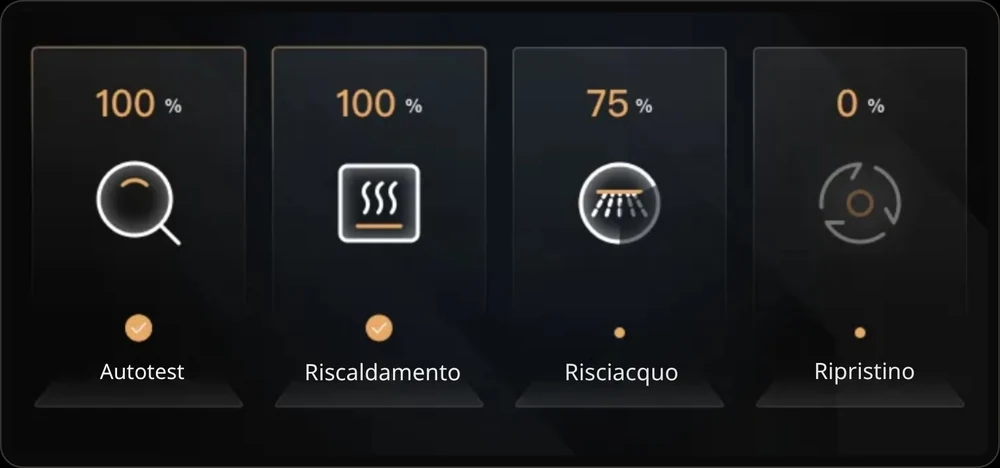
5. Preparazione delle bevande
Il menu delle bevande ha due pagine. Passare dall'una all'altra con le frecce ‹ e ›.
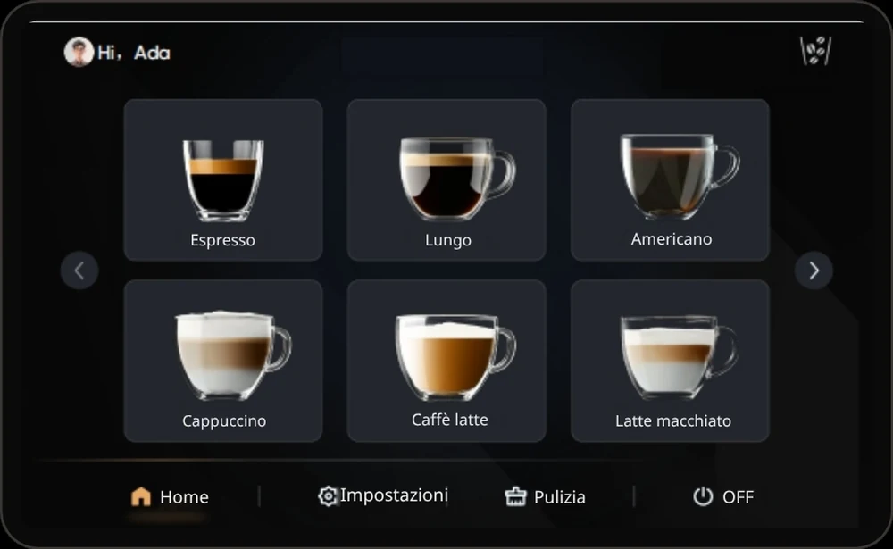
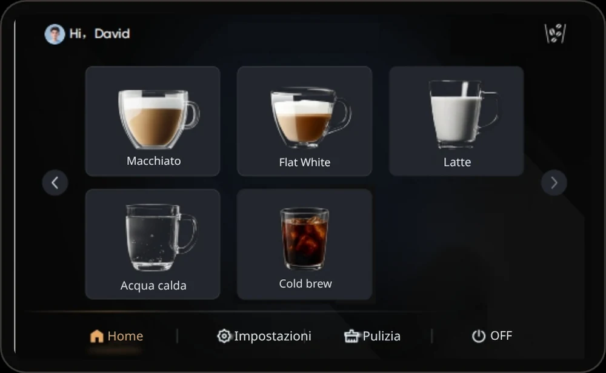
5.1 Caffè nero (Espresso, Lungo, Americano)
- Nella schermata principale, toccare una bevanda per aprirne le impostazioni. Per l'espresso, ad esempio, si possono regolare intensità, temperatura di estrazione, tempo di pre-infusione e quantità. Toccare «Avvia»; le impostazioni vengono salvate automaticamente.
- La macchina prepara la bevanda e mostra l'avanzamento in percentuale. Al 100% compare la finestra «Enjoy your coffee» e la bevanda è pronta. Per interrompere l'erogazione, toccare l'icona Annulla.
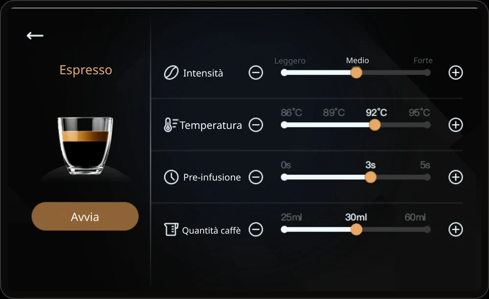
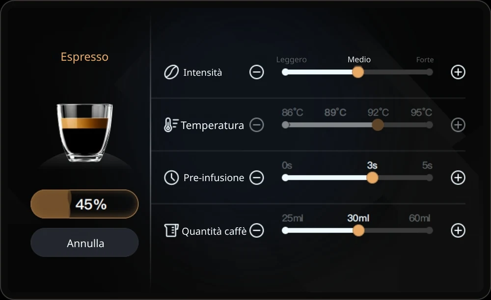
5.2 Caffè con latte (Cappuccino, Caffè latte, Latte macchiato, Macchiato, Flat White)
- Versare il latte nel contenitore del latte (oppure inserire il tubo del latte direttamente sul fondo di un cartone di latte). Assicurarsi che il tubo sia collegato saldamente al montalatte. Si consiglia latte freddo a 4–8 °C. Controllare la manopola del montalatte: «Froth milk» produce schiuma di latte calda, «Warm milk» produce latte caldo.
- Nella schermata principale, toccare una bevanda per aprirne le impostazioni. Per il caffè latte, ad esempio, si possono regolare intensità, temperatura di estrazione, tempo di pre-infusione, quantità di caffè e tempo di montatura del latte. Toccare «Avvia»; le impostazioni vengono salvate automaticamente.
- L'avanzamento è mostrato in percentuale. Al 100% un messaggio conferma che la bevanda è pronta. È possibile interrompere in qualsiasi momento con l'icona Annulla.
- Dopo una bevanda a base di latte, la macchina chiede se eseguire la pulizia profonda del montalatte. Se si prepara subito un'altra bevanda con latte, toccare «Annulla». Altrimenti toccare «Pulisci». Vedere 7.1.3 «Pulizia profonda del montalatte».


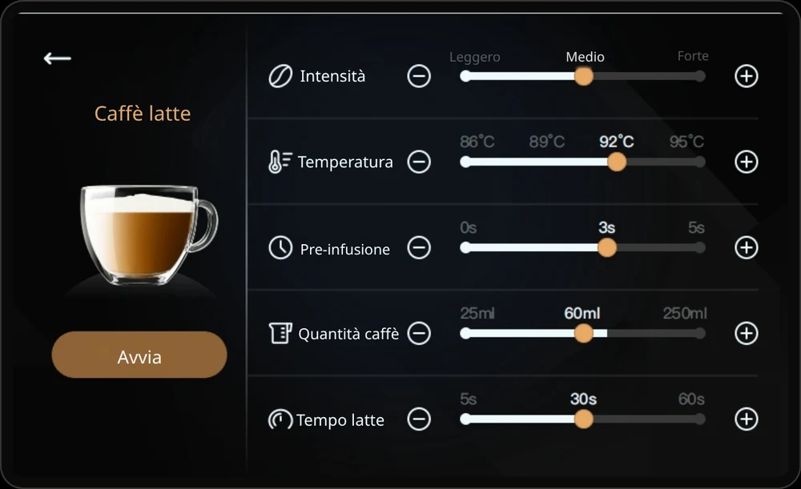
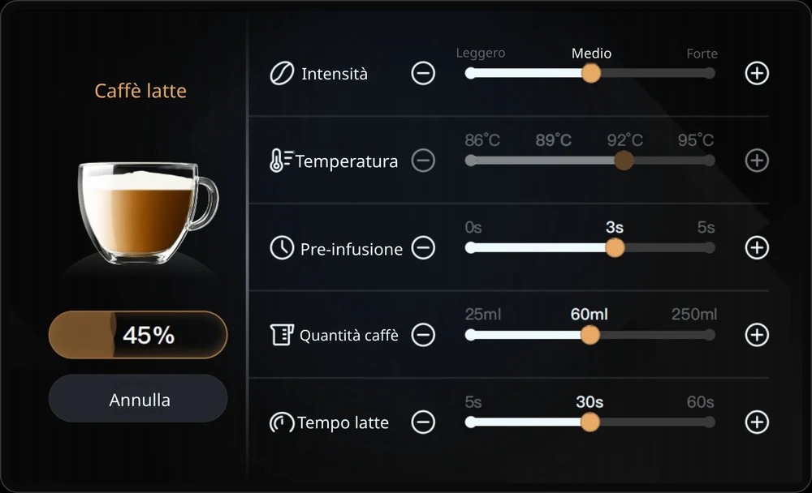
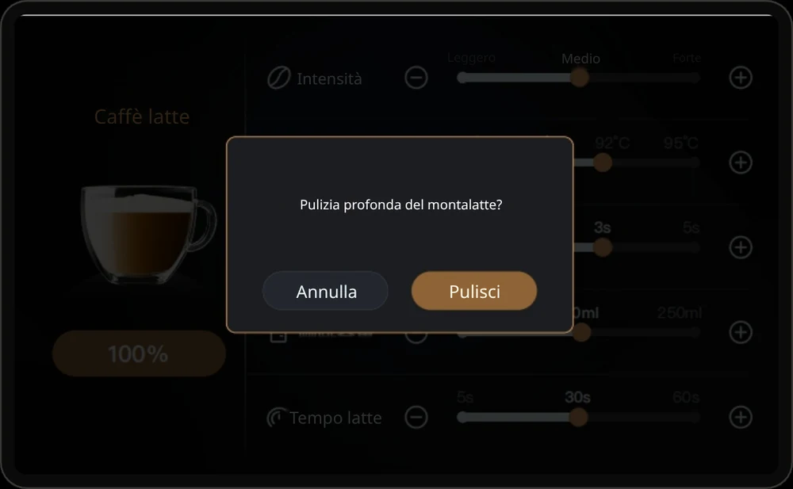
5.3 Latte caldo e schiuma di latte
- Versare il latte nel contenitore (oppure inserire il tubo sul fondo di un cartone di latte) e collegare il tubo al montalatte. Si consiglia latte freddo a 4–8 °C. Ruotare la manopola del montalatte su «Froth milk» (schiuma calda) o «Warm milk» (latte caldo).
- Toccare l'icona del latte nella schermata principale e impostare il tempo. Toccare «Avvia»; le impostazioni vengono salvate automaticamente.
- L'avanzamento è mostrato in percentuale; al 100% un messaggio conferma che la bevanda è pronta. È possibile interrompere in qualsiasi momento con l'icona Annulla.
- Al termine la macchina chiede se eseguire la pulizia profonda del montalatte; procedere come dopo un caffè con latte.
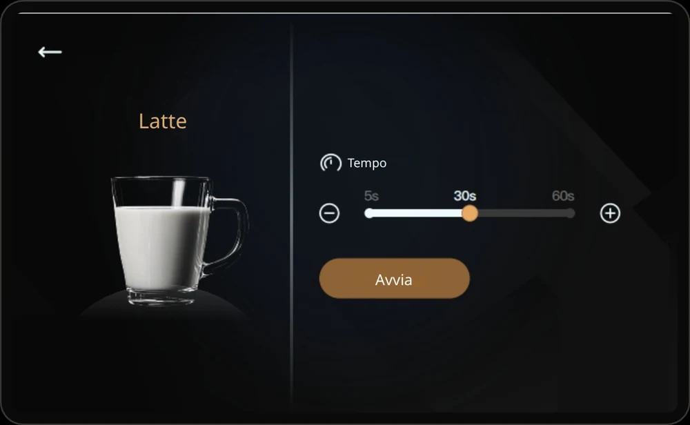
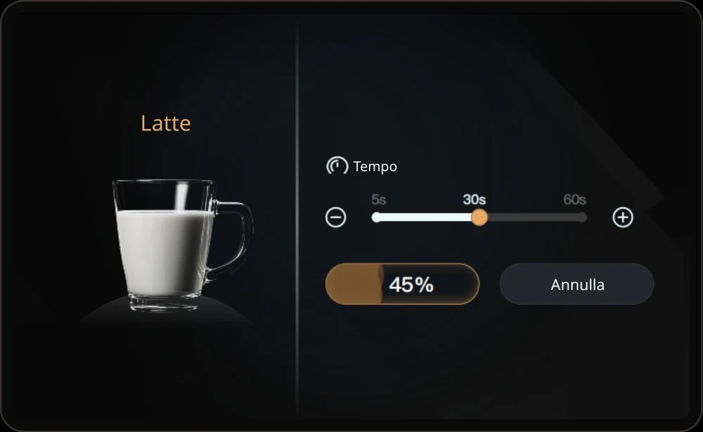
5.4 Acqua calda
- Toccare l'icona dell'acqua calda nella schermata principale e impostare temperatura e quantità. Toccare «Avvia»; le impostazioni vengono salvate automaticamente.
- La macchina eroga acqua calda e mostra l'avanzamento in percentuale. Al 100% un messaggio conferma il termine. È possibile interrompere in qualsiasi momento con l'icona Annulla.
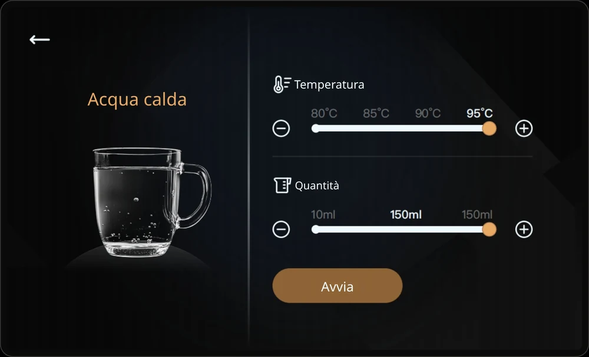
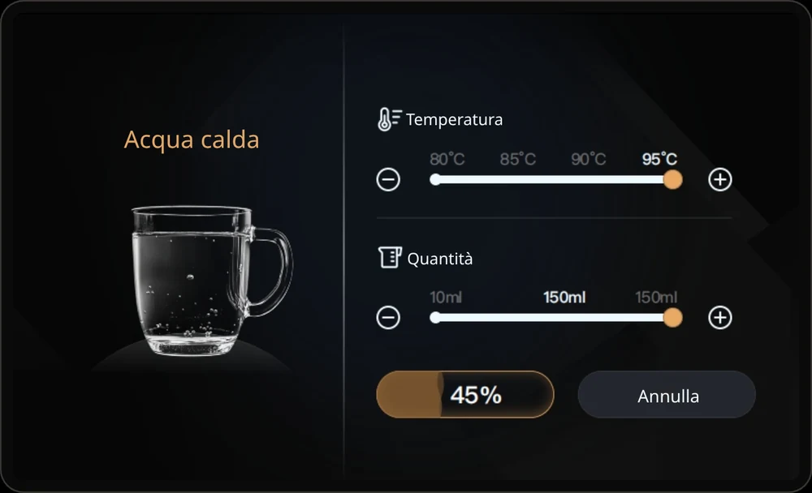
5.5 Profili utente
Toccare l'icona dell'avatar in alto a sinistra e scegliere l'utente 1, 2, 3 o 4. Ogni utente può impostare e salvare le proprie impostazioni delle bevande.
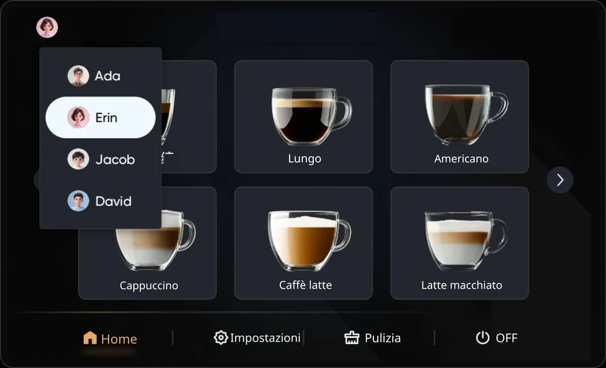
5.6 Regolazione della macinatura
La macinatura è impostata in fabbrica al livello ottimale, quindi è possibile preparare subito il caffè. Se il caffè risulta debole e con poca crema, oppure dopo alcune tazze scende molto lentamente, a gocce, regolare la macinatura:
- Aprire il coperchio del contenitore dei chicchi.
- Avviare la preparazione di un caffè. Quando si sente il macinino, ruotare la manopola di regolazione della macinatura sulla posizione desiderata (1 è la più fine, 5 la più grossa).
- Osservare la velocità con cui scende il caffè. Se scende troppo lentamente o non scende affatto, ruotare la manopola verso 5. Per un caffè corposo con crema densa, ruotarla di uno scatto verso 1. Cambiare un solo scatto alla volta per non danneggiare la macchina.

Attenzione. Una nuova impostazione della macinatura ha effetto solo dopo almeno due tazze. Se il risultato non è ancora quello desiderato, ruotare la manopola di un altro scatto. Anche la consistenza dei fondi di caffè nel contenitore fondi può aiutare a orientarsi.
6. Impostazioni
Toccare l'icona delle impostazioni in basso sullo schermo per aprire il menu delle impostazioni.
Lingua. La macchina supporta diverse lingue dell'interfaccia; scegliere quella desiderata.
Impostazioni bevande. Qui si modificano tutte le impostazioni delle bevande per l'utente attuale; le modifiche vengono salvate automaticamente nel suo profilo.
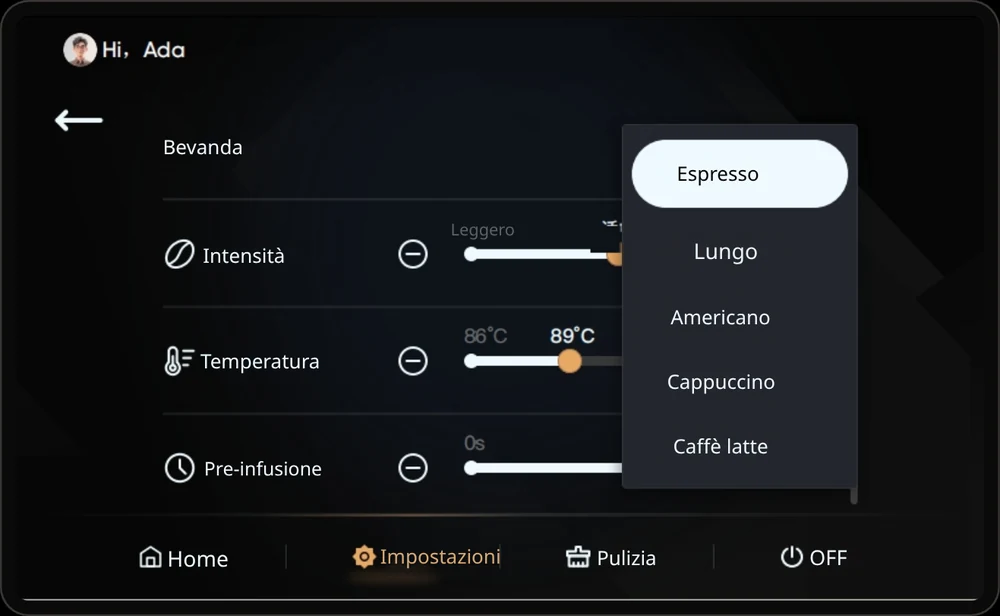
Spegnimento automatico. Imposta il tempo per lo spegnimento automatico. Trascorso questo tempo in standby, la macchina e lo schermo si spengono; toccare lo schermo per riattivarla.
Retroilluminazione in standby. Luminosità dello schermo in standby: piena, metà o spenta.
Regolazione durante l'erogazione. Se attiva, le impostazioni delle bevande possono essere modificate durante l'erogazione (tranne la temperatura di estrazione). Se disattiva, le impostazioni sono bloccate durante l'erogazione.
Suono. Attiva o disattiva i segnali acustici.
Livello di decalcificazione. Cinque livelli; con OFF il promemoria è disattivato. Quando il consumo totale d'acqua raggiunge il volume impostato, compare un promemoria di decalcificazione. Volume per livello: 1 — 80 l, 2 — 60 l, 3 — 40 l, 4 — 20 l, 5 — 10 l.
Impostazioni assistenza. Solo per l'assistenza del produttore.
Ripristino impostazioni di fabbrica. Riporta tutte le impostazioni ai valori di fabbrica: impostazioni del caffè, lingua, bevande, spegnimento automatico, luminosità, regolazione durante l'erogazione, suono e livello di decalcificazione.
Contatore bevande. Numero totale di bevande preparate e numero per ciascuna bevanda.
Numero decalcificazioni. Quante volte è stata completata la decalcificazione.
7. Pulizia e manutenzione
7.1 Pulizia automatica
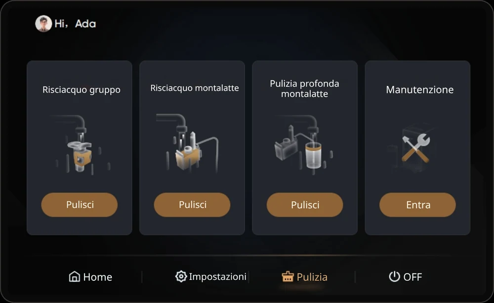
7.1.1 Risciacquo rapido del gruppo infusore. La caldaia si riscalda e la pompa fa passare acqua attraverso il gruppo infusore. Durante il risciacquo l'acqua di scarico esce dall'erogatore del caffè.
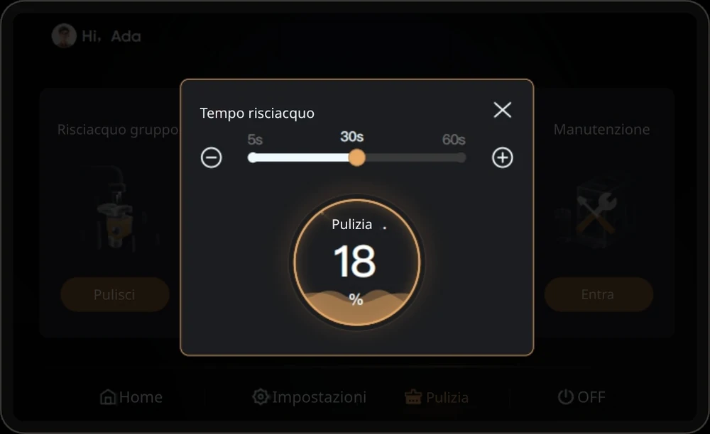
7.1.2 Risciacquo rapido del montalatte. La caldaia si riscalda e la pompa risciacqua il montalatte. L'acqua di scarico esce dall'erogatore del caffè.
7.1.3 Pulizia profonda del montalatte. Seguendo le indicazioni sullo schermo, lavare accuratamente il contenitore del latte, riempirlo di acqua pulita e toccare l'icona di pulizia. La macchina pulisce a fondo il montalatte automaticamente; la durata della pulizia è regolabile. L'acqua di scarico esce dall'erogatore del caffè.
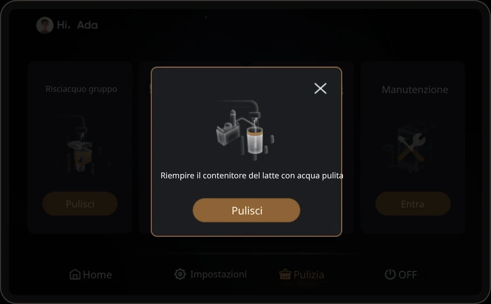
7.1.4 Manutenzione della macchina. Comprende la pulizia profonda del gruppo infusore (con pastiglia), la pulizia profonda del circuito del latte (con pastiglia) e la decalcificazione.
- Pulizia profonda del gruppo infusore (pastiglia). Avviare il programma, inserire una pastiglia detergente nel gruppo infusore quando richiesto e toccare «Avanti». Durante la pulizia l'acqua di scarico esce dall'erogatore del caffè.
- Pulizia profonda del circuito del latte (pastiglia). Avviare il programma, mettere nel contenitore del latte una pastiglia detergente per il circuito del latte e acqua pulita quando richiesto, poi toccare «Avanti». L'acqua di scarico esce dall'erogatore del caffè. Al termine lavare il contenitore, riempirlo di nuovo con acqua pulita ed eseguire di nuovo la pulizia per eliminare i residui di detergente.
- Decalcificazione. Toccare «Decalcifica ora». Quando richiesto, versare nel serbatoio dell'acqua un decalcificante per macchine da caffè e acqua pulita fino a MAX. Posizionare un contenitore grande sotto l'erogatore del caffè e toccare «Avanti». Controllare il contenitore perché non trabocchi. Al termine lavare il serbatoio, riempirlo con acqua pulita ed eseguire un risciacquo per eliminare i residui di decalcificante.
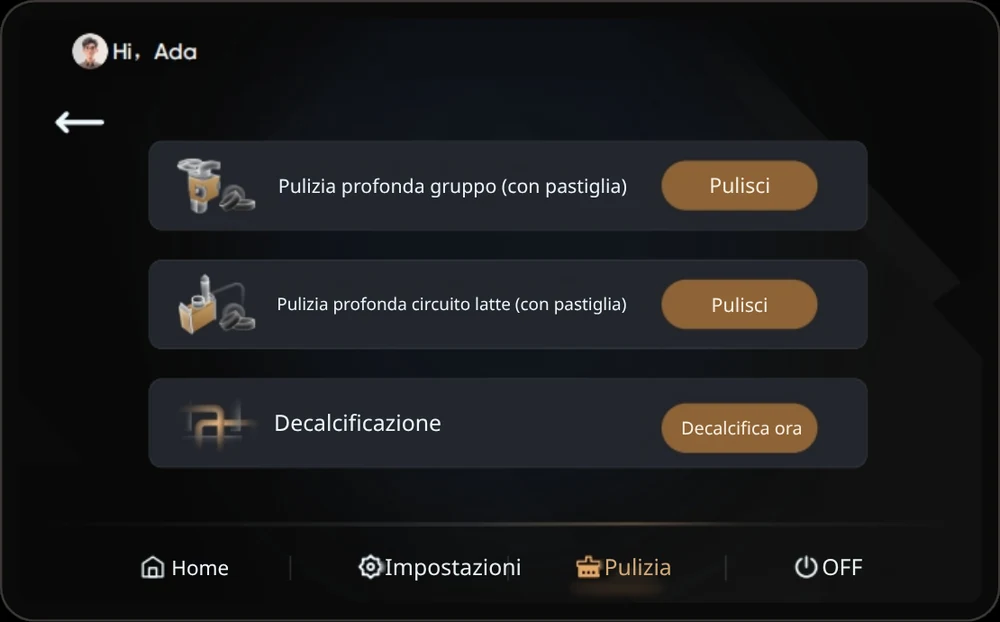
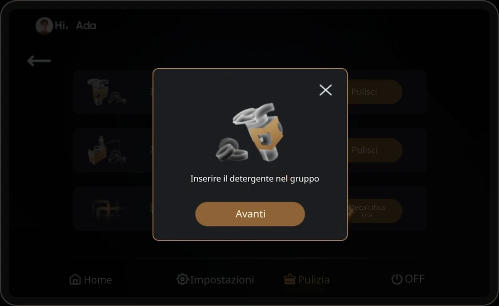
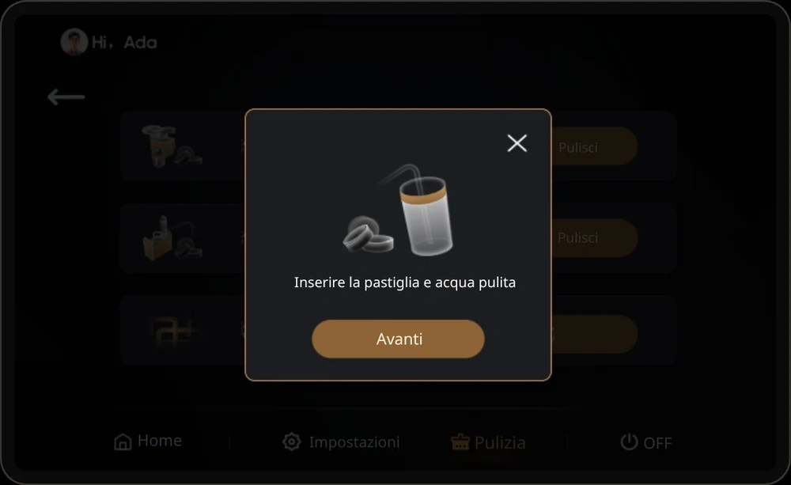
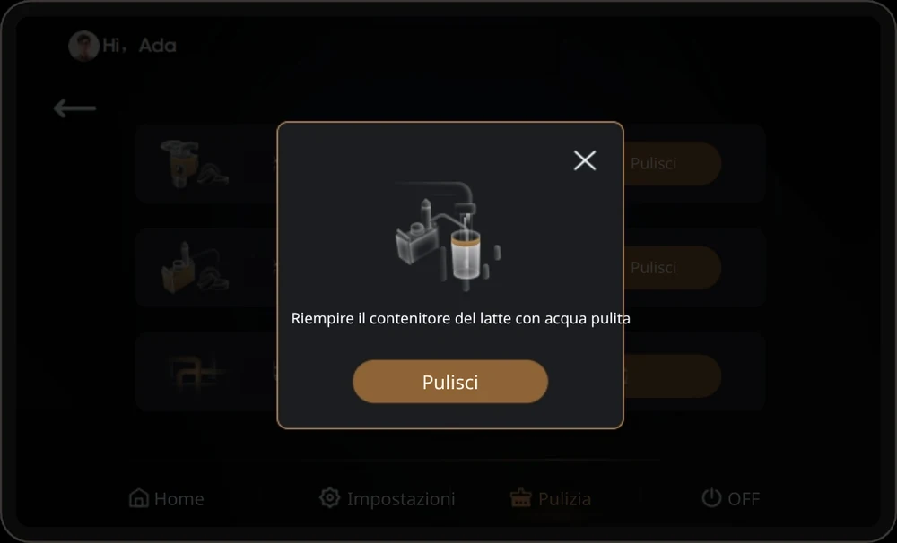
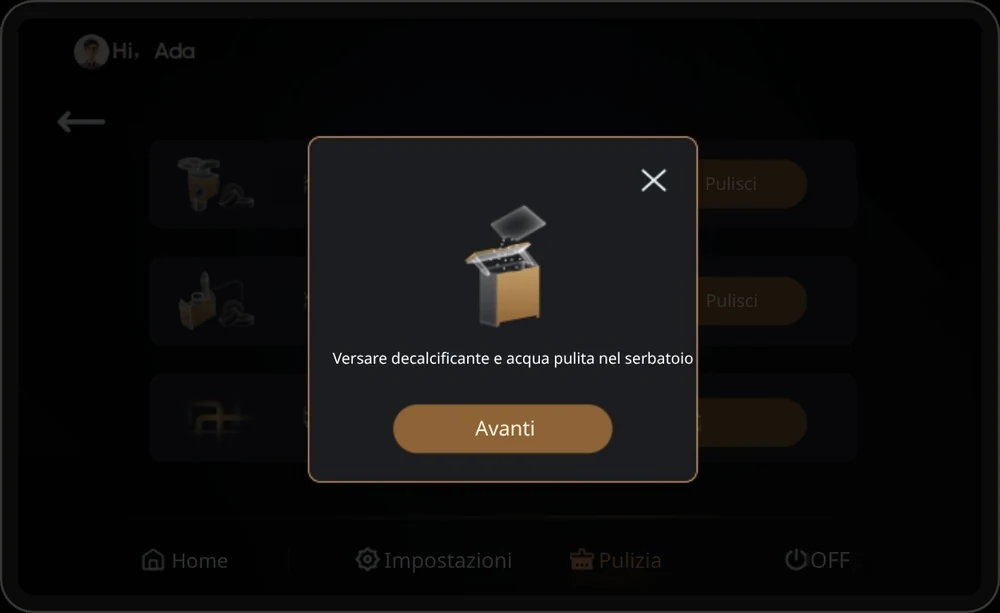
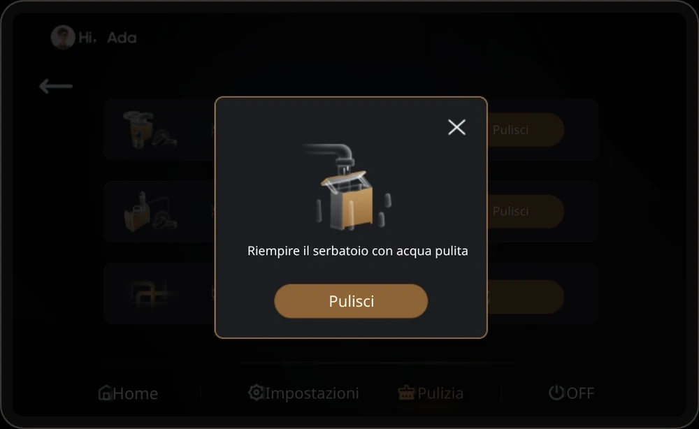
7.2 Pulizia manuale
Pulire regolarmente queste parti:
- Contenitore fondi — dopo ogni svuotamento.
- Gruppo vaschetta acqua di scarico (vaschetta, coperchio, griglia raccogligocce) — svuotare e lavare tutte le parti quando il galleggiante si alza.
- Serbatoio dell'acqua — lavare regolarmente con un panno morbido e un detergente delicato (consigliato una volta al mese).
- Erogatore del caffè — pulire regolarmente con una spugna o un panno; liberare le ostruzioni con uno stuzzicadenti.
- Contenitore dei chicchi — pulire di tanto in tanto con un panno asciutto (consigliato una volta al mese).
-
Condotto del caffè macinato (una volta al mese o in caso di ostruzione).
Nota. Eseguire solo con la macchina spenta e la spina scollegata.
① Aprire lo sportello laterale. ② Pulire il condotto con lo spazzolino. ③ Rimuovere i fondi di caffè visibili all'interno della macchina, se necessario con un aspirapolvere. ④ Rimuovere fondi e sporco dalla vaschetta dell'acqua di scarico.

Condotto del caffè macinato dietro lo sportello laterale -
Pulizia manuale del montalatte (consigliata una volta al mese).
① Spegnere la macchina. ② Scollegare il tubo del latte dal montalatte. ③ Premere verso l'interno i fermi sinistro e destro e tirare verso il basso per rimuovere l'intero montalatte. ④ Smontare il montalatte e sciacquare tutte le parti sotto l'acqua corrente; se necessario, lasciarle prima in ammollo per 10 minuti in un detergente per circuiti del latte.

Gruppo montalatte 
Smontaggio del montalatte Nota. Sciacquare accuratamente la fessura dell'aria sulla manopola di regolazione dell'aria senza danneggiarla, altrimenti la montatura del latte non funzionerà correttamente.

Fessura dell'aria sulla manopola di regolazione dell'aria ⑤ Rimontare tutte le parti in ordine inverso e verificare che la manopola di regolazione dell'aria sia inserita correttamente. Ha 5 posizioni: fine per una schiuma densa e vellutata, grossa per bolle più grandi. Regolarla secondo la schiuma preferita.

Rimontaggio e manopola di regolazione dell'aria -
Pulizia manuale del gruppo infusore (consigliata ogni due settimane).
① Spegnere la macchina e aprire lo sportello laterale. ② Premere i due pulsanti arancioni ai lati del gruppo infusore in direzione PUSH ed estrarre il gruppo. ③ Lasciare il gruppo in acqua pulita per 5 minuti, poi sciacquarlo sotto il rubinetto. Non metterlo in lavastoviglie e non usare detergenti. ④ Con lo sportello aperto, rimuovere con lo spazzolino i fondi di caffè visibili all'interno della macchina. ⑤ Premere fino in fondo la testa di infusione del gruppo pulito, reinserire il gruppo e premere sul segno PUSH finché non scatta in posizione.

Gruppo infusore: premere entrambi i pulsanti PUSH Nota. Assicurarsi che entrambi i pulsanti arancioni siano tornati nella posizione originale, altrimenti la macchina potrebbe danneggiarsi.
7.3 Rimozione, rimontaggio e pulizia delle macine
Se non esce caffè macinato, il condotto è ostruito, un corpo estraneo è bloccato nel macinino oppure le macine sono montate in modo errato:
- Spegnere la macchina e rimuovere tutti i chicchi dal contenitore.
- Ruotare il coperchio del macinino in senso antiorario finché il segno di sblocco non è allineato alla nervatura del contenitore dei chicchi, quindi sollevare il coperchio.
- Ruotare la manopola di regolazione della macinatura su 5, sollevarla e ruotarla in senso orario nella posizione di sblocco per liberare le macine.
- Tirare verso l'alto la maniglia della macina per estrarre il gruppo macine.
- Rimuovere tutti i residui di caffè macinato e di chicchi dalla camera di macinatura; aiutano un aspirapolvere e un piccolo cacciavite a taglio. Pulire accuratamente, altrimenti le macine non si posizioneranno correttamente.
- Rimontare il gruppo macine. Ruotare la manopola di regolazione della macinatura in senso antiorario su 5, sollevarla e continuare a ruotare in senso antiorario fino a 3 o a un altro livello adatto, quindi tirare di nuovo la maniglia della macina. Se il manicotto della macina non esce, è bloccato correttamente. Se esce, non è bloccato completamente: ruotare la manopola in senso orario per sbloccare, premere con decisione la macina in sede e ruotare la manopola in senso antiorario fino a 3 o a un altro livello adatto.
- Rimontare il coperchio del macinino e ruotarlo in senso orario finché il segno di blocco non è allineato alla nervatura del contenitore dei chicchi.


8. Trasporto e smaltimento
8.1 Trasporto
- Conservare l'imballaggio originale per eventuali trasporti futuri.
- Prima del trasporto scaricare tutta l'acqua residua dalla macchina da caffè per evitare danni.
- Svuotare il serbatoio dell'acqua e la vaschetta dell'acqua di scarico e pulire la macchina dentro e fuori.
8.2 Residui di caffè
I residui di caffè sono completamente organici e possono essere smaltiti con i rifiuti domestici.
8.3 Acqua di scarico
L'acqua di scarico della preparazione e della pulizia è conforme agli standard per le acque reflue domestiche e può essere versata in un normale scarico.
8.4 Smaltimento dell'apparecchio
- L'apparecchio è realizzato con materiali riciclabili di alta qualità.
- Non smaltire l'apparecchio con i rifiuti domestici. Seguire le norme locali sullo smaltimento dei rifiuti.
9. Risoluzione dei problemi
| Problema | Causa | Soluzione |
|---|---|---|
| La macchina non si accende | Assenza di corrente o interruttore principale su OFF | Collegare il cavo di alimentazione e portare l'interruttore su ON |
| Codice di errore sullo schermo o pulsanti che non rispondono | Guasto del software o dell'elettronica | Spegnere, scollegare la spina, attendere 30 secondi e riaccendere. Se il problema persiste, contattare il produttore o il rivenditore |
| Rumore insolito durante la macinatura | Corpo estraneo nel macinino | Contattare il produttore o il rivenditore |
| Il caffè scende lentamente o non scende | Macinatura troppo fine | Ruotare la manopola della macinatura verso una macinatura più grossa (uno scatto alla volta). La modifica ha effetto dopo almeno due tazze |
| Il caffè scende lentamente o non scende | Circuito dell'acqua non riempito | Tenere premuto il pulsante di accensione per eseguire il risciacquo automatico allo spegnimento, poi preparare di nuovo il caffè |
| Il caffè scende lentamente o non scende | Gruppo infusore sporco | Pulire accuratamente il gruppo infusore |
| Il caffè scende troppo velocemente ed è debole | Macinatura troppo grossa | Ruotare la manopola della macinatura verso una macinatura più fine (uno scatto alla volta). La modifica ha effetto dopo almeno due tazze |
| Il gruppo infusore non si estrae | Gruppo infusore non in posizione iniziale | Riavviare la macchina ed eliminare tutti gli avvisi; il gruppo torna automaticamente in posizione iniziale |
| Esce acqua limpida invece del caffè | I chicchi non vengono macinati; i chicchi sono umidi | Impostare prima una macinatura più grossa; se non basta, contattare l'assistenza |
| «Gruppo infusore non installato» dopo averlo inserito | Gruppo infusore non bloccato | Inserire il gruppo e premere sul segno PUSH finché non scatta |
| Troppo poco caffè | Perdita nei tubi interni | Contattare il produttore o il rivenditore |
| Troppo poco caffè | Circuito dell'acqua ostruito dal calcare | Eseguire il programma completo di decalcificazione |
| Il latte non viene aspirato | Infiltrazione d'aria nel montalatte; troppa aria; tubo del latte ostruito | Controllare e rimontare tutte le parti del montalatte; ridurre la regolazione dell'aria; pulire il tubo del latte e i raccordi |
10. Responsabilità e garanzia
Il produttore non accetta richieste di garanzia né si assume responsabilità per lesioni o danni materiali nei seguenti casi:
- Uso dell'apparecchio non conforme alla destinazione d'uso o in violazione delle regole.
- Installazione, messa in funzione, utilizzo, pulizia o manutenzione non corretti.
- Mancato rispetto delle istruzioni di questo manuale.
- Funzionamento della macchina da caffè in condizioni anomale.
- Uso di ricambi non originali.
- Danni causati da corpi estranei, incidenti, atti dolosi o cause di forza maggiore.